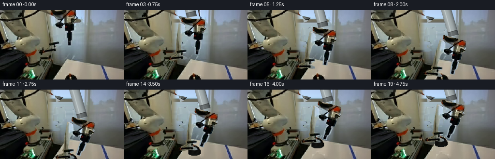
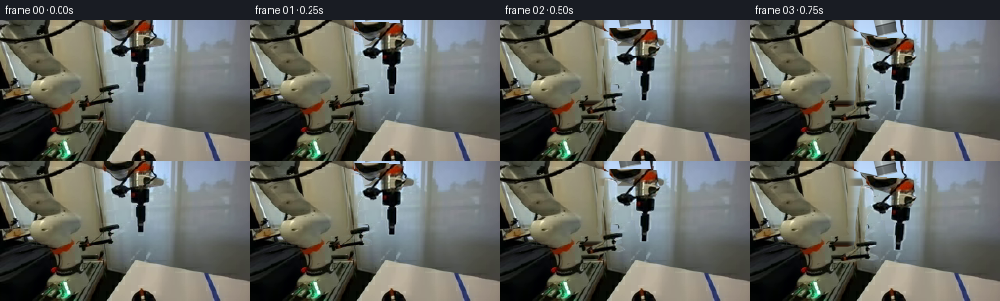

CODING AGENTS AS PIXEL WORLD MODELS
traex/GPT-6.1-Sol · common50_0012
点击播放 · 原生 RGB 像素
逐轮保存的候选
回放视频、检查图与代码变化。
每份候选均可单独播放。实际图片检查记录在下方工具轨迹中。
候选 01播放与检查图
点击播放 · 原生 RGB 像素

展开代码变化
--- 上一保存版本
+++ 本次保存版本
@@ -0,0 +1,182 @@
+"""Deterministic pixel-based grasp-and-lift animation, with rigid articulated parts."""
+from pathlib import Path
+import numpy as np
+from PIL import Image, ImageDraw, ImageFilter
+import artifact_io
+
+ROOT=Path(__file__).resolve().parent
+W,H=256,144
+S=4
+
+
+def polygon_mask(points):
+ m=Image.new('L',(W*S,H*S))
+ ImageDraw.Draw(m).polygon([(round(x*S),round(y*S)) for x,y in points],fill=255)
+ return np.asarray(m.resize((W,H),Image.Resampling.LANCZOS)).astype(float)/255
+
+
+def rot(a):
+ t=np.deg2rad(a)
+ return np.array([[np.cos(t),-np.sin(t)],[np.sin(t),np.cos(t)]])
+
+
+def rigid(pivot,angle,translation=(0,0)):
+ r=rot(angle)
+ p=np.array(pivot,dtype=float)
+ return r,p+np.array(translation)-r@p
+
+
+def combine(a,b):
+ return a[0]@b[0],a[0]@b[1]+a[1]
+
+
+def point(p,t):
+ return t[0]@np.array(p)+t[1]
+
+
+def paste_rigid(canvas,texture,mask,trans):
+ r,b=trans
+ ri=r.T
+ bi=-ri@b
+ coeff=(ri[0,0],ri[0,1],bi[0],ri[1,0],ri[1,1],bi[1])
+ # Premultiplied RGBA prevents fringes from the removed background.
+ prem=np.clip(texture.astype(float)*mask[...,None],0,255).astype(np.uint8)
+ col=np.asarray(Image.fromarray(prem).transform((W,H),Image.Transform.AFFINE,coeff,Image.Resampling.BICUBIC)).astype(float)
+ alpha=np.asarray(Image.fromarray((mask*255).astype(np.uint8)).transform((W,H),Image.Transform.AFFINE,coeff,Image.Resampling.BICUBIC)).astype(float)/255
+ return canvas*(1-alpha[...,None])+col
+
+
+def smooth(t):
+ t=np.clip(t,0,1)
+ return t*t*(3-2*t)
+
+
+def draw_shaft(canvas,end,angle):
+ # A solid 91-pixel link: the proximal joint is above the field of view.
+ d=np.array([np.sin(np.deg2rad(angle)),np.cos(np.deg2rad(angle))])
+ end=np.asarray(end)
+ start=end-91*d
+ yy,xx=np.mgrid[:H*S,:W*S].astype(float)
+ pts=np.stack(((xx+.5)/S,(yy+.5)/S),axis=-1)
+ q=pts-start
+ u=q@d
+ v=q@np.array([d[1],-d[0]])
+ radius=10.5
+ m=(u>=0)&(u<=91)&(abs(v)<radius)
+ normal=np.sqrt(np.clip(1-(v/radius)**2,0,1))
+ light=np.clip(.40+.46*normal-.12*v/radius,0,1)
+ rgb=np.array([177,182,179])[None,None,:]*light[...,None]+np.array([13,18,22])
+ # Machined edge, longitudinal highlight and mounting collar.
+ rgb+=np.exp(-((v+3.5)/1.0)**2)[...,None]*24
+ collar=(u>81)&(u<90)
+ rgb=np.where(collar[...,None],rgb*.62,rgb)
+ seam=(u>80)&(u<81)
+ rgb=np.where(seam[...,None],rgb*.4,rgb)
+ grain=1.2*np.sin(xx*1.2+yy*.61)+.8*np.sin(xx*.57-yy*1.71)
+ rgb=np.clip(rgb+grain[...,None],0,255)
+ rgba=np.zeros((H*S,W*S,4),dtype=np.uint8)
+ rgba[:,:,:3]=rgb.astype(np.uint8)
+ rgba[:,:,3]=m.astype(np.uint8)*255
+ layer=Image.fromarray(rgba).resize((W,H),Image.Resampling.LANCZOS)
+ ar=np.asarray(layer).astype(float)
+ a=ar[:,:,3:4]/255
+ return canvas*(1-a)+ar[:,:,:3]*a
+
+
+def build():
+ src=np.array(Image.open(ROOT/'first_frame.png').convert('RGB'))
+ # Independent rigid housing and two jaws, traced numerically from the source.
+ housing=polygon_mask([(105,-3),(153,-3),(156,14),(158,17),(154,26),(152,30),(134,32),(130,35),(124,38),(117,37),(112,34),(112,27),(122,24),(131,16),(123,14),(112,12),(106,7)])
+ left=polygon_mask([(101,10),(113,12),(116,23),(116,33),(111,41),(109,62),(110,65),(121,66),(121,71),(115,74),(115,78),(122,80),(124,81),(125,84),(119,86),(107,86),(97,90),(87,89),(85,85),(90,81),(98,77),(101,75),(99,72),(98,70),(100,67),(100,61),(99,54),(99,43)])
+ right=polygon_mask([(135,27),(150,27),(153,30),(153,41),(149,44),(151,47),(151,60),(148,65),(149,73),(145,74),(139,74),(138,64),(137,59),(137,47),(138,45),(134,43),(133,38),(133,30)])
+ union=np.maximum.reduce([housing,left,right])
+ # Reconstruct only the occluded backdrop, from nearby, untouched surface pixels.
+ bg=src.astype(float).copy()
+ for y in range(H):
+ l=np.median(src[y,78:96],axis=0)
+ rr=np.median(src[y,159:169],axis=0)
+ for x in range(80,160):
+ # The metal-toned backdrop to the right and warm divider to the left.
+ weight=smooth((x-98)/15)
+ c=l*(1-weight)+rr*weight
+ c+=np.array([.17,.17,.16])*(163-x)*weight
+ bg[y,x]=bg[y,x]*(1-union[y,x])+c*union[y,x]
+ # Restore a sharp stable backdrop boundary hidden behind the long left jaw.
+ # A spatially smooth reconstruction avoids a moving duplicate of the gripper.
+
+ # Stopper, including the continuation below the bottom edge of the source.
+ OH=166
+ obj=np.zeros((OH,W,3),dtype=np.uint8)
+ om=np.zeros((OH,W),dtype=float)
+ # Analytical continuation of the rigid rubber disk. Original visible texture is retained.
+ yy,xx=np.mgrid[:OH,:W]
+ ex=(xx-147.1)/13.0
+ top=(ex*ex+((yy-143.5)/8.5)**2)<=1
+ side=(np.abs(ex)<=1)&(yy>=143.5)&(yy<=149.5+5.3*np.sqrt(np.clip(1-ex*ex,0,1)))
+ shape=top|side
+ shade=8+9*np.sqrt(np.clip(1-ex*ex,0,1))+3*np.sin(xx*.62+yy*.3)
+ for c,k in enumerate([1.,1.03,.91]):
+ obj[:,:,c]=np.clip(shade*k,0,255).astype(np.uint8)
+ om[shape]=1
+ visible=polygon_mask([(143,130),(146,130),(147,133),(150,133),(152,134),(156,136),(158,138),(159,140),(160,144),(134,144),(134,141),(135,139),(137,137),(139,135),(141,134),(142,132)])
+ obj[:H]=np.where((visible>0)[...,None],src,obj[:H])
+ om[:H]=np.maximum(om[:H],visible)
+ # Finish the missing bottom rim with a narrow diffuse specular band.
+ rim=shape&(yy>=151)&(yy<=153)
+ obj[rim]=np.array([16,19,18])
+ # Below-frame continuation is initially invisible, so frame zero remains exact.
+ objtexture=obj[:H].copy()
+ # Store the full cutout; warping samples beyond y=143 during the lift.
+ objprem=np.clip(obj*om[...,None],0,255).astype(np.uint8)
+ obj_img=Image.fromarray(objprem)
+ om_img=Image.fromarray(np.uint8(om*255))
+
+ frames=[]
+ for i in range(20):
+ if i==0:
+ frames.append(src.copy());continue
+ approach=smooth(i/8)
+ descent=smooth((i-8)/3)
+ closure=smooth((i-8)/3)
+ lift=smooth((i-11)/6)
+ theta=15*approach
+ dx=23*approach-3*lift
+ dy=54*approach+5*descent-36*lift
+ global_t=rigid((125,78),theta,(dx,dy))
+ # Symmetric jaw closure by rigid rotation about fixed hinge axes.
+ l_t=combine(global_t,rigid((114,31),-8*closure))
+ r_t=combine(global_t,rigid((140,32),8*closure))
+ canvas=bg.copy()
+ if lift>0:
+ # Remove the resting stopper from the white tabletop by local interpolation.
+ for y in range(130,H):
+ lcol=np.median(src[y,126:133],axis=0).astype(float)
+ rcol=np.median(src[y,163:169],axis=0).astype(float)
+ for x in range(133,162):
+ k=(x-133)/29
+ val=lcol*(1-k)+rcol*k
+ a=visible[y,x]
+ canvas[y,x]=canvas[y,x]*(1-a)+val*a
+ # Soft, stationary floor shadow becomes faint as the disk gains clearance.
+ y,x=np.mgrid[:H,:W]
+ a=.14*(1-.75*lift)*np.exp(-(((x-149)/15)**2+((y-143)/4)**2)*2)
+ canvas*=1-a[...,None]
+ ox=-3*lift;oy=-36*lift
+ coeff=(1,0,-ox,0,1,-oy)
+ color=np.asarray(obj_img.transform((W,H),Image.Transform.AFFINE,coeff,Image.Resampling.BICUBIC)).astype(float)
+ alpha=np.asarray(om_img.transform((W,H),Image.Transform.AFFINE,coeff,Image.Resampling.BICUBIC)).astype(float)/255
+ canvas=canvas*(1-alpha[...,None])+color
+ # Upper arm is rigid and remains connected beyond the upper edge of the image.
+ end=point((127,-3),global_t)
+ canvas=draw_shaft(canvas,end,12+theta*.27)
+ canvas=paste_rigid(canvas,src,left,l_t)
+ canvas=paste_rigid(canvas,src,right,r_t)
+ canvas=paste_rigid(canvas,src,housing,global_t)
+ frames.append(np.clip(np.rint(canvas),0,255).astype(np.uint8))
+ return np.stack(frames)
+
+
+if __name__=='__main__':
+ frames=build()
+ np.save(ROOT/'candidate_frames.npy',frames)
+ artifact_io.save(frames,ROOT)
候选 02播放与检查图
点击播放 · 原生 RGB 像素


展开代码变化
--- 上一保存版本
+++ 本次保存版本
@@ -125,7 +125,6 @@
rim=shape&(yy>=151)&(yy<=153)
obj[rim]=np.array([16,19,18])
# Below-frame continuation is initially invisible, so frame zero remains exact.
- objtexture=obj[:H].copy()
# Store the full cutout; warping samples beyond y=143 during the lift.
objprem=np.clip(obj*om[...,None],0,255).astype(np.uint8)
obj_img=Image.fromarray(objprem)
@@ -140,12 +139,12 @@
closure=smooth((i-8)/3)
lift=smooth((i-11)/6)
theta=15*approach
- dx=23*approach-3*lift
- dy=54*approach+5*descent-36*lift
+ dx=18*approach-3*lift
+ dy=54*approach+8*descent-36*lift
global_t=rigid((125,78),theta,(dx,dy))
# Symmetric jaw closure by rigid rotation about fixed hinge axes.
- l_t=combine(global_t,rigid((114,31),-8*closure))
- r_t=combine(global_t,rigid((140,32),8*closure))
+ l_t=combine(global_t,rigid((114,31),-12*closure))
+ r_t=combine(global_t,rigid((140,32),20*closure))
canvas=bg.copy()
if lift>0:
# Remove the resting stopper from the white tabletop by local interpolation.
@@ -168,7 +167,10 @@
canvas=canvas*(1-alpha[...,None])+color
# Upper arm is rigid and remains connected beyond the upper edge of the image.
end=point((127,-3),global_t)
- canvas=draw_shaft(canvas,end,12+theta*.27)
+ # Match the barely-visible initial link, then reveal its cylindrical span.
+ shaft_canvas=draw_shaft(canvas,end,12+theta*.27)
+ reveal=smooth(i/3)
+ canvas=canvas*(1-reveal)+shaft_canvas*reveal
canvas=paste_rigid(canvas,src,left,l_t)
canvas=paste_rigid(canvas,src,right,r_t)
canvas=paste_rigid(canvas,src,housing,global_t)
候选 03播放与检查图
可观测工具轨迹
实际执行的命令与返回图片。
命令 1exit 0
/bin/bash -lc 'ls -la && cat prompt.txt && cat GENERATION_RULES.md'
命令 2exit 0
/bin/bash -lc "cat task_spec.json && cat artifact_io.py && python - <<'PY'
from PIL import Image
import numpy as np
im=np.array(Image.open('first_frame.png').convert('RGB'))
print(im.shape)
# ASCII RGB categories
im=np.array(Image.open('first_frame.png').convert('RGB').resize((128,72)))
for y,row in enumerate(im):
s=''
for r,g,b in row.astype(int):
v=(r+g+b)/3
if v<35:c='@'
elif v<65:c='#'
elif v<100:c='O'
elif r>b*1.3 and r>g*1.2:c='R'
elif b>r*1.2 and b>g*1.08:c='B'
elif max(r,g,b)-min(r,g,b)<18:c= 'o' if v<150 else ('-' if v<190 else ('.' if v<225 else ' '))
else:c='x'
s+=c
print(f'{y*2:3}',s)
PY"命令 3exit 0
/bin/bash -lc "python - <<'PY'
from PIL import Image
import numpy as np
im=np.array(Image.open('first_frame.png'))
for y in range(0,144,8):
print(y, ' '.join('%3d,%3d,%3d'%tuple(im[y,x]) for x in range(0,256,16)))
print('lower right grayscale every pixel x110-220 y100-144')
g=im.mean(2)
chars='@%#*+=-:. '
for y in range(96,144):
print('%3d '%y+''.join(chars[min(9,int(v/256*10))] for v in g[y,90:230]))
PY"命令 4exit 0
/bin/bash -lc "python - <<'PY'
import numpy as np
from PIL import Image
im=np.array(Image.open('first_frame.png').convert('RGB')); g=im.mean(2)
for name,(x0,y0,x1,y1) in {'upper':(0,0,170,88),'stopper':(128,122,181,144)}.items():
print('\\n',name)
for y in range(y0,y1):
print('%3d '%y+''.join(' .:-=+*#%@'[min(9,int(v//26))] for v in g[y,x0:x1]))
PY"命令 5exit 0
/bin/bash -lc "python - <<'PY'
from PIL import Image
import numpy as np
im=np.array(Image.open('first_frame.png'))
print(' '+''.join(str(x//10%10) for x in range(90,170)))
print(' '+''.join(str(x%10) for x in range(90,170)))
for y in range(0,106):
s=''
for r,g,b in im[y,90:170].astype(float):
v=(r+g+b)/3
s+='@' if v<25 else '#' if v<50 else 'O' if v<80 else 'o' if v<110 else 'x' if r-b>20 else 'B' if b-r>16 else '+' if v<160 else '*' if v<185 else '.' if v<215 else ' '
print('%3d '%y+s)
PY"命令 6exit 0
/bin/bash -lc "python - <<'PY'
import numpy as np
from PIL import Image
im=np.array(Image.open('first_frame.png'))
g=im.mean(2)
print('x10 to116,y0to144 step2')
print(' '+''.join(str(x//10%10) for x in range(10,116)))
print(' '+''.join(str(x%10) for x in range(10,116)))
for y in range(0,144,2):
s=''
for r,g,b in im[y,10:116].astype(float):
v=(r+g+b)/3
s+='@' if v<25 else '#' if v<50 else 'O' if v<80 else 'o' if v<110 else 'x' if r-b>20 else 'G' if g-r>20 else 'B' if b-r>16 else '+' if v<160 else '*' if v<185 else '.' if v<215 else ' '
print('%3d '%y+s)
PY"命令 7exit 0
/bin/bash -lc "python - <<'PY'
import numpy as np
from PIL import Image
im=np.array(Image.open('first_frame.png'))
for y in range(128,144):
print('\\ny',y)
print(' '.join(f'{x}:{tuple(im[y,x])}' for x in range(134,166)))
PY"命令 8exit 0
/bin/bash -lc "cat > generate.py <<'PY'
\"\"\"Deterministic pixel-based grasp-and-lift animation, with rigid articulated parts.\"\"\"
from pathlib import Path
import numpy as np
from PIL import Image, ImageDraw, ImageFilter
import artifact_io
ROOT=Path(__file__).resolve().parent
W,H=256,144
S=4
def polygon_mask(points):
m=Image.new('L',(W*S,H*S))
ImageDraw.Draw(m).polygon([(round(x*S),round(y*S)) for x,y in points],fill=255)
return np.asarray(m.resize((W,H),Image.Resampling.LANCZOS)).astype(float)/255
def rot(a):
t=np.deg2rad(a)
return np.array([[np.cos(t),-np.sin(t)],[np.sin(t),np.cos(t)]])
def rigid(pivot,angle,translation=(0,0)):
r=rot(angle)
p=np.array(pivot,dtype=float)
return r,p+np.array(translation)-r@p
def combine(a,b):
return a[0]@b[0],a[0]@b[1]+a[1]
def point(p,t):
return t[0]@np.array(p)+t[1]
def paste_rigid(canvas,texture,mask,trans):
r,b=trans
ri=r.T
bi=-ri@b
coeff=(ri[0,0],ri[0,1],bi[0],ri[1,0],ri[1,1],bi[1])
# Premultiplied RGBA prevents fringes from the removed background.
prem=np.clip(texture.astype(float)*mask[...,None],0,255).astype(np.uint8)
col=np.asarray(Image.fromarray(prem).transform((W,H),Image.Transform.AFFINE,coeff,Image.Resampling.BICUBIC)).astype(float)
alpha=np.asarray(Image.fromarray((mask*255).astype(np.uint8)).transform((W,H),Image.Transform.AFFINE,coeff,Image.Resampling.BICUBIC)).astype(float)/255
return canvas*(1-alpha[...,None])+col
def smooth(t):
t=np.clip(t,0,1)
return t*t*(3-2*t)
def draw_shaft(canvas,end,angle):
# A solid 91-pixel link: the proximal joint is above the field of view.
d=np.array([np.sin(np.deg2rad(angle)),np.cos(np.deg2rad(angle))])
end=np.asarray(end)
start=end-91*d
yy,xx=np.mgrid[:H*S,:W*S].astype(float)
pts=np.stack(((xx+.5)/S,(yy+.5)/S),axis=-1)
q=pts-start
u=q@d
v=q@np.array([d[1],-d[0]])
radius=10.5
m=(u>=0)&(u<=91)&(abs(v)<radius)
normal=np.sqrt(np.clip(1-(v/radius)**2,0,1))
light=np.clip(.40+.46*normal-.12*v/radius,0,1)
rgb=np.array([177,182,179])[None,None,:]*light[...,None]+np.array([13,18,22])
# Machined edge, longitudinal highlight and mounting collar.
rgb+=np.exp(-((v+3.5)/1.0)**2)[...,None]*24
collar=(u>81)&(u<90)
rgb=np.where(collar[...,None],rgb*.62,rgb)
seam=(u>80)&(u<81)
rgb=np.where(seam[...,None],rgb*.4,rgb)
grain=1.2*np.sin(xx*1.2+yy*.61)+.8*np.sin(xx*.57-yy*1.71)
rgb=np.clip(rgb+grain[...,None],0,255)
rgba=np.zeros((H*S,W*S,4),dtype=np.uint8)
rgba[:,:,:3]=rgb.astype(np.uint8)
rgba[:,:,3]=m.astype(np.uint8)*255
layer=Image.fromarray(rgba).resize((W,H),Image.Resampling.LANCZOS)
ar=np.asarray(layer).astype(float)
a=ar[:,:,3:4]/255
return canvas*(1-a)+ar[:,:,:3]*a
def build():
src=np.array(Image.open(ROOT/'first_frame.png').convert('RGB'))
# Independent rigid housing and two jaws, traced numerically from the source.
housing=polygon_mask([(105,-3),(153,-3),(156,14),(158,17),(154,26),(152,30),(134,32),(130,35),(124,38),(117,37),(112,34),(112,27),(122,24),(131,16),(123,14),(112,12),(106,7)])
left=polygon_mask([(101,10),(113,12),(116,23),(116,33),(111,41),(109,62),(110,65),(121,66),(121,71),(115,74),(115,78),(122,80),(124,81),(125,84),(119,86),(107,86),(97,90),(87,89),(85,85),(90,81),(98,77),(101,75),(99,72),(98,70),(100,67),(100,61),(99,54),(99,43)])
right=polygon_mask([(135,27),(150,27),(153,30),(153,41),(149,44),(151,47),(151,60),(148,65),(149,73),(145,74),(139,74),(138,64),(137,59),(137,47),(138,45),(134,43),(133,38),(133,30)])
union=np.maximum.reduce([housing,left,right])
# Reconstruct only the occluded backdrop, from nearby, untouched surface pixels.
bg=src.astype(float).copy()
for y in range(H):
l=np.median(src[y,78:96],axis=0)
rr=np.median(src[y,159:169],axis=0)
for x in range(80,160):
# The metal-toned backdrop to the right and warm divider to the left.
weight=smooth((x-98)/15)
c=l*(1-weight)+rr*weight
c+=np.array([.17,.17,.16])*(163-x)*weight
bg[y,x]=bg[y,x]*(1-union[y,x])+c*union[y,x]
# Restore a sharp stable backdrop boundary hidden behind the long left jaw.
# A spatially smooth reconstruction avoids a moving duplicate of the gripper.
# Stopper, including the continuation below the bottom edge of the source.
OH=166
obj=np.zeros((OH,W,3),dtype=np.uint8)
om=np.zeros((OH,W),dtype=float)
# Analytical continuation of the rigid rubber disk. Original visible texture is retained.
yy,xx=np.mgrid[:OH,:W]
ex=(xx-147.1)/13.0
top=(ex*ex+((yy-143.5)/8.5)**2)<=1
side=(np.abs(ex)<=1)&(yy>=143.5)&(yy<=149.5+5.3*np.sqrt(np.clip(1-ex*ex,0,1)))
shape=top|side
shade=8+9*np.sqrt(np.clip(1-ex*ex,0,1))+3*np.sin(xx*.62+yy*.3)
for c,k in enumerate([1.,1.03,.91]):
obj[:,:,c]=np.clip(shade*k,0,255).astype(np.uint8)
om[shape]=1
visible=polygon_mask([(143,130),(146,130),(147,133),(150,133),(152,134),(156,136),(158,138),(159,140),(160,144),(134,144),(134,141),(135,139),(137,137),(139,135),(141,134),(142,132)])
obj[:H]=np.where((visible>0)[...,None],src,obj[:H])
om[:H]=np.maximum(om[:H],visible)
# Finish the missing bottom rim with a narrow diffuse specular band.
rim=shape&(yy>=151)&(yy<=153)
obj[rim]=np.array([16,19,18])
# Below-frame continuation is initially invisible, so frame zero remains exact.
objtexture=obj[:H].copy()
# Store the full cutout; warping samples beyond y=143 during the lift.
objprem=np.clip(obj*om[...,None],0,255).astype(np.uint8)
obj_img=Image.fromarray(objprem)
om_img=Image.fromarray(np.uint8(om*255))
frames=[]
for i in range(20):
if i==0:
frames.append(src.copy());continue
approach=smooth(i/8)
descent=smooth((i-8)/3)
closure=smooth((i-8)/3)
lift=smooth((i-11)/6)
theta=15*approach
dx=23*approach-3*lift
dy=54*approach+5*descent-36*lift
global_t=rigid((125,78),theta,(dx,dy))
# Symmetric jaw closure by rigid rotation about fixed hinge axes.
l_t=combine(global_t,rigid((114,31),-8*closure))
r_t=combine(global_t,rigid((140,32),8*closure))
canvas=bg.copy()
if lift>0:
# Remove the resting stopper from the white tabletop by local interpolation.
for y in range(130,H):
lcol=np.median(src[y,126:133],axis=0).astype(float)
rcol=np.median(src[y,163:169],axis=0).astype(float)
for x in range(133,162):
k=(x-133)/29
val=lcol*(1-k)+rcol*k
a=visible[y,x]
canvas[y,x]=canvas[y,x]*(1-a)+val*a
# Soft, stationary floor shadow becomes faint as the disk gains clearance.
y,x=np.mgrid[:H,:W]
a=.14*(1-.75*lift)*np.exp(-(((x-149)/15)**2+((y-143)/4)**2)*2)
canvas*=1-a[...,None]
ox=-3*lift;oy=-36*lift
coeff=(1,0,-ox,0,1,-oy)
color=np.asarray(obj_img.transform((W,H),Image.Transform.AFFINE,coeff,Image.Resampling.BICUBIC)).astype(float)
alpha=np.asarray(om_img.transform((W,H),Image.Transform.AFFINE,coeff,Image.Resampling.BICUBIC)).astype(float)/255
canvas=canvas*(1-alpha[...,None])+color
# Upper arm is rigid and remains connected beyond the upper edge of the image.
end=point((127,-3),global_t)
canvas=draw_shaft(canvas,end,12+theta*.27)
canvas=paste_rigid(canvas,src,left,l_t)
canvas=paste_rigid(canvas,src,right,r_t)
canvas=paste_rigid(canvas,src,housing,global_t)
frames.append(np.clip(np.rint(canvas),0,255).astype(np.uint8))
return np.stack(frames)
if __name__=='__main__':
frames=build()
np.save(ROOT/'candidate_frames.npy',frames)
artifact_io.save(frames,ROOT)
PY
python generate.py"命令 9exit 0
/bin/bash -lc "python - <<'PY'
import numpy as np
from PIL import Image
import generate as g
frames=np.load('candidate_frames.npy')
for i in [1,5,8,11,15,19]:
print('\\nFRAME',i)
im=np.array(Image.fromarray(frames[i]).resize((128,72)))
for y in range(0,72):
s=''
for r,gg,b in im[y].astype(float):
v=(r+gg+b)/3
s+='@' if v<25 else '#' if v<50 else 'O' if v<80 else 'o' if v<110 else 'x' if r-b>20 else 'B' if b-r>16 else '+' if v<160 else '*' if v<185 else '.' if v<215 else ' '
print('%3d '%(y*2)+s)
print('grasp jaw tips:')
for i in [0,8,11,19]:
a=g.smooth(i/8);d=g.smooth((i-8)/3);c=d;l=g.smooth((i-11)/6)
t=g.rigid((125,78),15*a,(23*a-3*l,54*a+5*d-36*l))
lt=g.combine(t,g.rigid((114,31),-8*c));rt=g.combine(t,g.rigid((140,32),8*c))
print(i,'left',g.point((116,80),lt),'right',g.point((143,71),rt),'housing',g.point((130,27),t))
PY"命令 10exit 0
/bin/bash -lc "python - <<'PY' import generate as g for dx in [15,18,20,23]: for ca in [8,14,20,24]: t=g.rigid((125,78),15,(dx,59)) lt=g.combine(t,g.rigid((114,31),-8));rt=g.combine(t,g.rigid((140,32),ca)) print(dx,ca,'left inner',g.point((119,82),lt).round(1),'left pad',g.point((115,77),lt).round(1),'right',g.point((143,71),rt).round(1)) PY"
命令 11exit 0
/bin/bash -lc "python - <<'PY'
import numpy as np
import generate as g
from PIL import Image
f=np.load('candidate_frames.npy')[19]
print('FINAL GRASP CROP')
print(' '+''.join(str(x//10%10) for x in range(117,176)))
print(' '+''.join(str(x%10) for x in range(117,176)))
for y in range(84,120):
print('%3d '%y+''.join(' .:-=+*#%@'[min(9,int(v/26))] for v in f[y,117:176].mean(1)))
PY"命令 12exit 0
/bin/bash -lc "python - <<'PY' import generate as g for lx in [-8,-12,-15,-18]: t=g.rigid((125,78),15,(18,59));lt=g.combine(t,g.rigid((114,31),lx)); rt=g.combine(t,g.rigid((140,32),20)) print(lx, g.point((115,77),lt),g.point((119,82),lt),g.point((122,82),lt),g.point((140,71),rt)) PY"
命令 13exit 0
/bin/bash -lc "python - <<'PY'
import generate as g
T=g.rigid((125,78),15,(18,62)); L=g.combine(T,g.rigid((114,31),-12));R=g.combine(T,g.rigid((140,32),20))
for p in [(115,74),(115,75),(119,82),(122,82)]:print('L',p,g.point(p,L))
for p in [(140,71),(143,71),(143,73)]:print('R',p,g.point(p,R))
PY"命令 14exit 0
/bin/bash -lc "python - <<'PY'
from pathlib import Path
p=Path('generate.py')
s=p.read_text().replace('dx=23*approach-3*lift','dx=18*approach-3*lift').replace('dy=54*approach+5*descent-36*lift','dy=54*approach+8*descent-36*lift').replace('rigid((114,31),-8*closure)','rigid((114,31),-12*closure)').replace('rigid((140,32),8*closure)','rigid((140,32),20*closure)')
s=s.replace('canvas=draw_shaft(canvas,end,12+theta*.27)','''# Match the barely-visible initial link, then reveal its cylindrical span.
shaft_canvas=draw_shaft(canvas,end,12+theta*.27)
reveal=smooth(i/3)
canvas=canvas*(1-reveal)+shaft_canvas*reveal''')
s=s.replace(\" objtexture=obj[:H].copy()\\n\",'')
p.write_text(s)
PY
python generate.py
python - <<'PY'
from PIL import Image
import numpy as np
f=np.load('candidate_frames.npy'); im=np.array(Image.open('first_frame.png').convert('RGB'))
assert f.shape==(20,144,256,3) and f.dtype==np.uint8
assert np.array_equal(f[0],im)
print('Verified: 20 RGB frames; frame 00 pixel-identical.')
print('Changed pixels per transition:',[np.any(f[i]"'!=f[i-1],2).sum().item() for i in range(1,20)])
print('"'Final grasp numeric crop:')
for y in range(90,123):
print(f'{y:3} '+''.join(' .:-=+*#%@'[min(9,int(v/26))] for v in f[-1,y,122:171].mean(1)))
PY"命令 15exit 0
/bin/bash -lc "python - <<'PY'
from pathlib import Path
import numpy as np
from PIL import Image
p=np.load('pixels.npz')['pixels']
f=np.load('candidate_frames.npy')
unpacked=np.stack(((p>>16)&255,(p>>8)&255,p&255),axis=-1).transpose(2,0,1,3).astype('uint8')
assert p.shape==(144,256,20)
assert np.array_equal(unpacked,f)
assert len(list(Path('frames').glob('*.png')))==20
print('Artifact integrity verified.')
for name in ['generate.py','pixels.npz','index.html','inspection.png']:
print(name,Path(name).stat().st_size,'bytes')
PY"保存候选 3 份；完成命令 15 次；可验证图片返回 0 张。原始 API 响应与完整日志保留在本地。